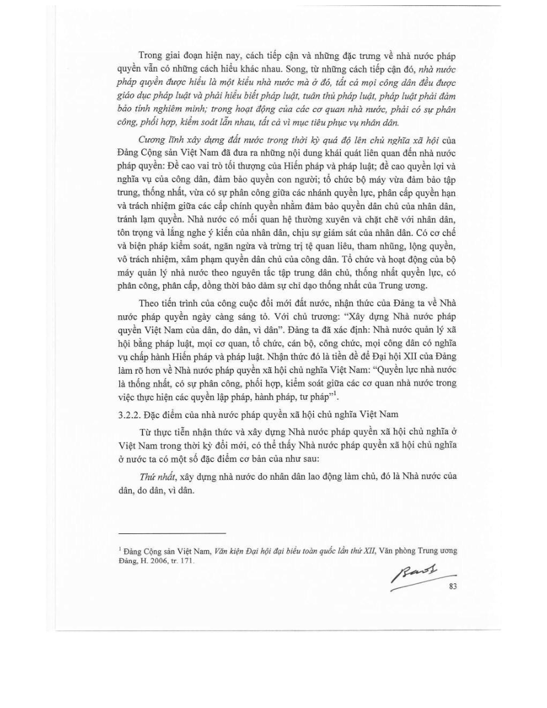
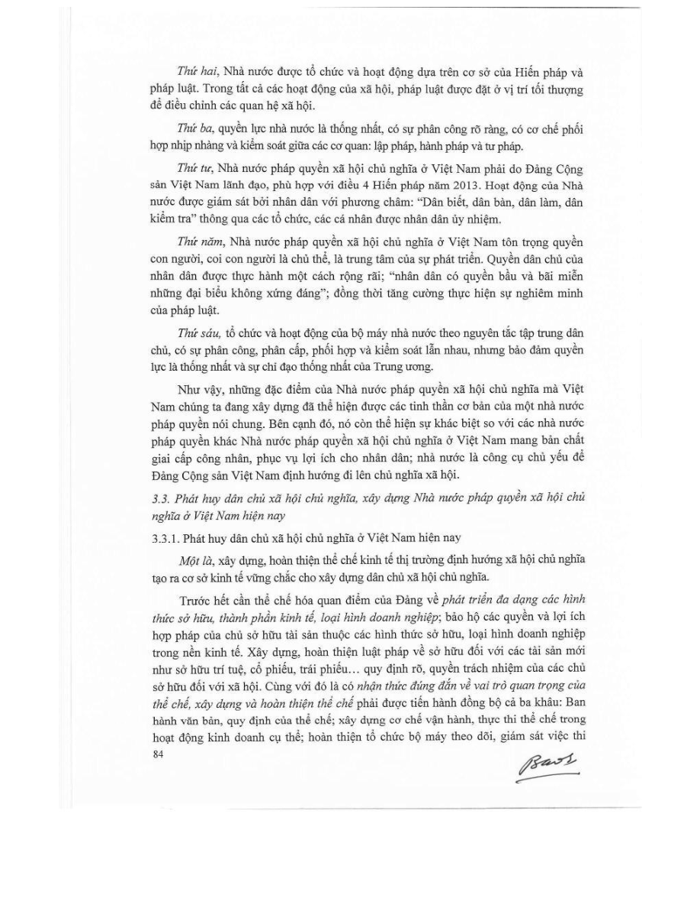
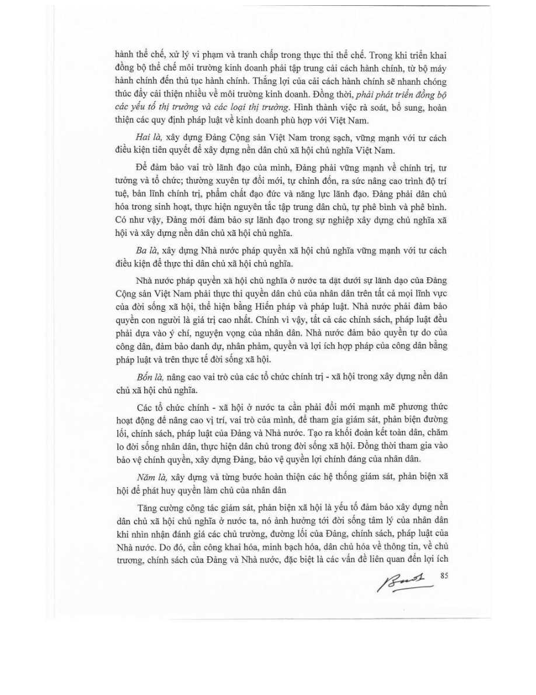
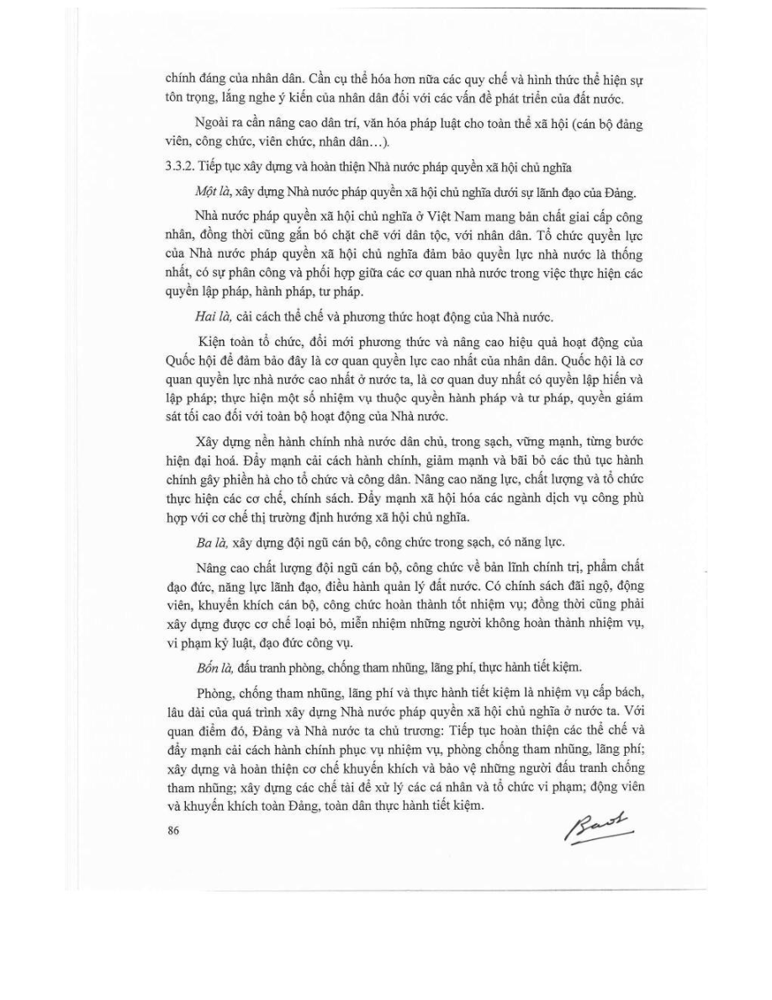
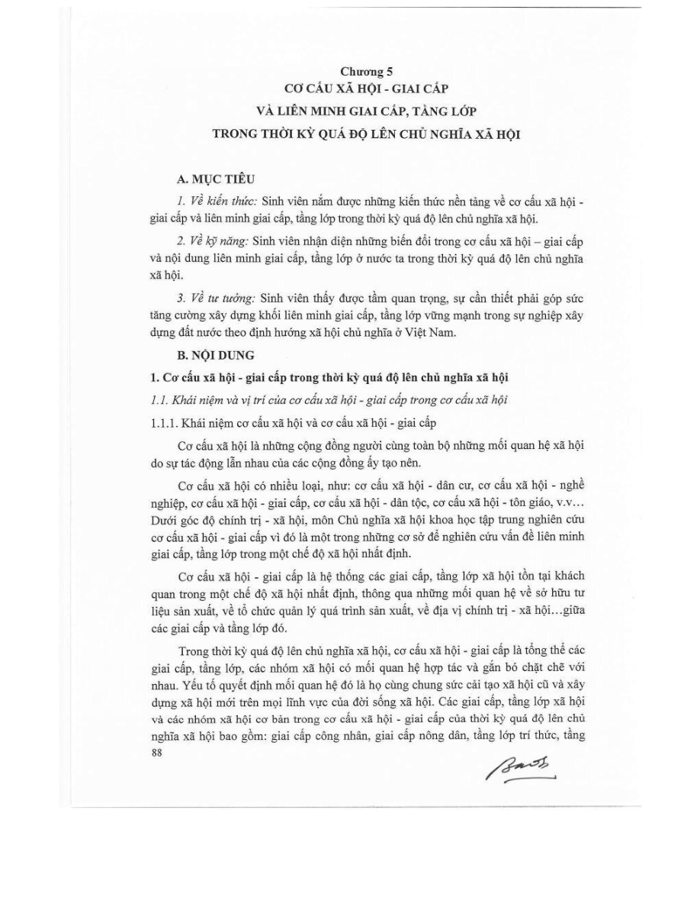
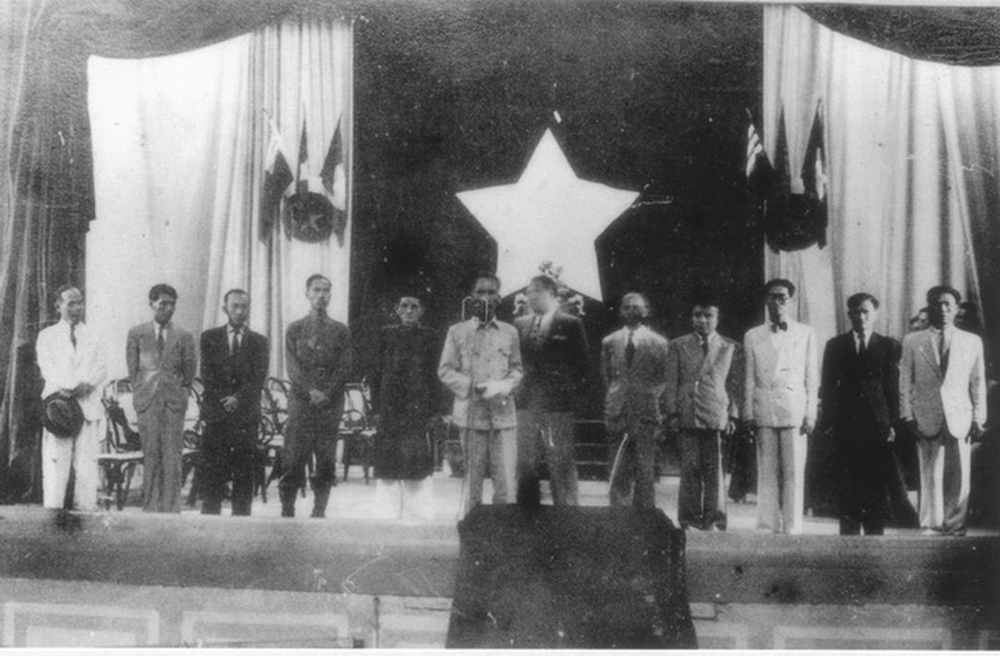
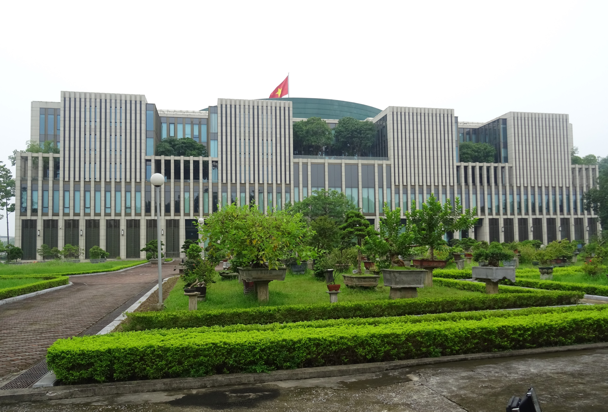
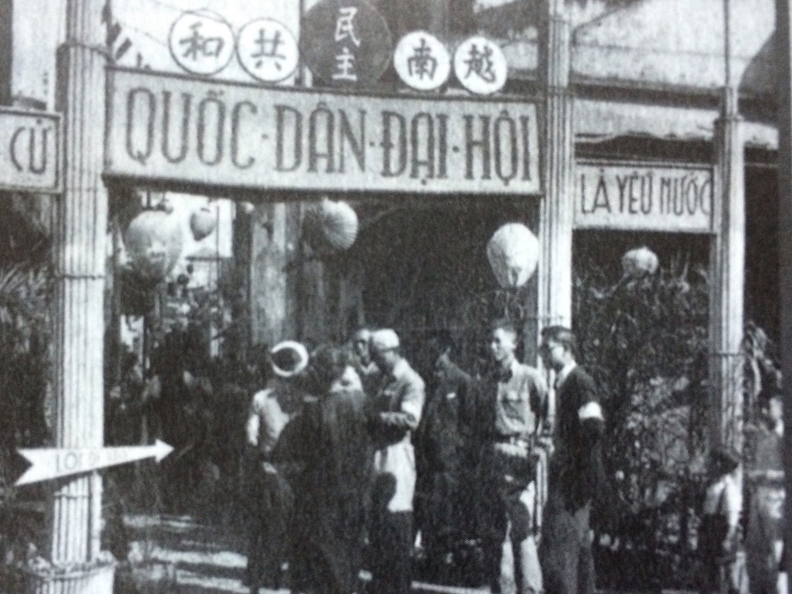
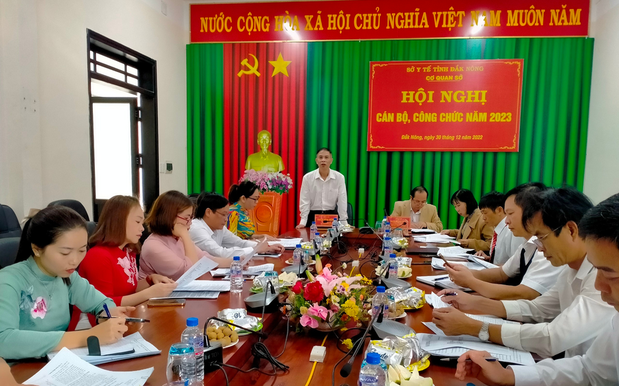

Thư viện trực quan
Nhìn lý thuyết bằng sơ đồ, chuỗi quan hệ và hồ sơ khái niệm
Phần này không lặp lại giáo trình theo dạng chữ dài. Thay vào đó, nội dung được chuyển thành sơ đồ và tài liệu trực quan để người xem hiểu nhanh hơn mối liên hệ giữa quyền lực, pháp luật, tham nhũng và trách nhiệm công dân.
Chuỗi nguyên nhân – hệ quả
1. Khi quyền lực thiếu kiểm soát
Chuỗi này cho thấy tham nhũng không xuất hiện từ một khái niệm trừu tượng, mà từ cách quyền lực được sử dụng trong thực tế. Khi quyền lực không được kiểm tra, giám sát và ràng buộc, nó có xu hướng lệch khỏi mục tiêu phục vụ lợi ích công.
2. Khi quyền lực được kiểm soát
Nhà nước pháp quyền không loại bỏ quyền lực, mà đặt quyền lực vào khuôn khổ. Giá trị của kiểm soát quyền lực là làm cho quyền lực vận hành đúng mục đích, đúng pháp luật và chịu trách nhiệm trước nhân dân.
Mô phỏng Kiểm soát Quyền lực
Đây là mô phỏng khái niệm phục vụ học tập, không phải mô hình dự báo thực tế.
Các biến được lấy từ logic: kiểm soát quyền lực, công khai minh bạch, giải trình, giám sát.
Đảng lãnh đạo vs Đảng buông lỏng
| ✅ Đảng lãnh đạo | ❌ Đảng buông lỏng |
|---|---|
| Có cơ chế giải trình rõ ràng | Né tránh kiểm tra, không giải trình |
| Công khai, minh bạch trong hoạt động | Che giấu thông tin, thiếu minh bạch |
| Xử lý sai phạm không có ngoại lệ | Dung túng, bao che sai phạm |
| Kiểm soát quyền lực chặt chẽ | Giám sát yếu, buông lỏng quản lý |
| Lợi ích công đặt trên lợi ích tư | Lợi ích nhóm chen vào lợi ích công |
| Gắn xây dựng Đảng với chống tham nhũng | Tách rời xây dựng Đảng khỏi phòng chống tham nhũng |
Tiêu chí phân định quan trọng nhất: Kiểm soát quyền lực — có kiểm soát = lãnh đạo, không kiểm soát = buông lỏng.
Tủ hồ sơ "Hệ quả xã hội"
Suy thoái
Suy thoái tư tưởng chính trị, đạo đức, lối sống...
Tha hóa quyền lực
Biến quyền lực công thành quyền lực tư...
Vụ lợi
Lợi dụng chức vụ, quyền hạn để tư lợi...
Tham nhũng
Hành vi lạm dụng quyền lực được giao...
Suy giảm niềm tin
Nhân dân mất niềm tin vào Đảng và Nhà nước...
Tổn hại NN Pháp quyền
Nền tảng pháp quyền bị xói mòn...
Hồ sơ khái niệm
Công khai, minh bạch
Là điều kiện để nhân dân và xã hội biết được thông tin cần thiết, từ đó có cơ sở giám sát hoạt động công quyền.
Trách nhiệm giải trình
Là yêu cầu buộc người có thẩm quyền phải giải thích, chịu trách nhiệm và không thể né tránh trước quyết định hoặc hành vi công vụ của mình.
Kiểm soát quyền lực
Là cơ chế ngăn quyền lực bị lạm dụng, bị biến thành công cụ phục vụ lợi ích cá nhân hoặc lợi ích nhóm.
Xung đột lợi ích
Là tình huống trong đó lợi ích riêng có khả năng ảnh hưởng hoặc chi phối việc thực hiện nhiệm vụ công.
Giám sát của nhân dân
Là cách quyền làm chủ của nhân dân được thực hiện trong thực tế, thông qua phản ánh, theo dõi, đánh giá và lên tiếng trước hoạt động công quyền.
Thanh tra nhân dân
Là một kênh thể hiện vai trò giám sát ở cơ sở, góp phần phát hiện, phản ánh và phòng ngừa tiêu cực trong đời sống công.
Đọc từ giáo trình
Các trang giáo trình dưới đây là nguồn gốc chính cho nội dung Hồ sơ chương học và Chủ đề tranh luận. Click để phóng to.

Trang 82
Trang 83
Trang 84
Trang 85
Trang 87Một số mốc thể chế liên quan

Quốc hội khóa I ra mắt
Mốc khởi đầu cho nền dân chủ và thể chế pháp quyền của nước Việt Nam Dân chủ Cộng hòa.
Luật Phòng, chống tham nhũng
Đặt nền pháp lý cho công khai, minh bạch, kiểm soát xung đột lợi ích, kiểm soát tài sản, thu nhập và trách nhiệm của các chủ thể trong phòng, chống tham nhũng.
Luật Thực hiện dân chủ ở cơ sở
Nhấn mạnh cơ chế để người dân tham gia, giám sát và phát huy quyền làm chủ trong đời sống cơ sở.
Nghị định về Ban Thanh tra nhân dân
Cụ thể hóa hơn kênh giám sát của nhân dân trong cơ quan, đơn vị và ở cơ sở.
Hoàn thiện hoạt động giám sát và sắp xếp bộ máy
Cho thấy nội dung phòng, chống tham nhũng và giám sát quyền lực vẫn tiếp tục được đặt ra trong bối cảnh hiện nay.
Phòng, chống tham nhũng không chỉ là chủ trương về mặt lý luận, mà còn là một quá trình thể chế hóa liên tục.
Hình ảnh của một nền liêm chính công

Không gian thể chế
Quyền lực công phải được tổ chức trong khuôn khổ pháp luật và chịu trách nhiệm trước nhân dân.
Kiểm soát quyền lực
Muốn chống tham nhũng, phải thiết kế cơ chế kiểm tra, giám sát và giải trình hiệu quả.

Văn hóa pháp lý
Một xã hội thượng tôn pháp luật không chỉ dựa vào chế tài, mà còn dựa vào ý thức công dân và chuẩn mực công vụ.

Giám sát của nhân dân
Dân biết, dân bàn, dân làm, dân kiểm tra không chỉ là khẩu hiệu, mà là nền tảng của dân chủ và giám sát xã hội.
Khi nội dung chương học được nhìn bằng sơ đồ và mối liên hệ, người xem dễ thấy một điều: chống tham nhũng không phải một mảng riêng lẻ, mà là một phần của bài toán kiểm soát quyền lực và xây dựng Nhà nước pháp quyền.